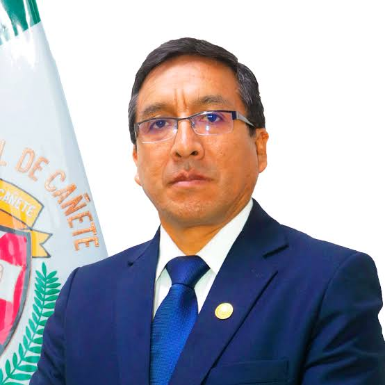

Director (e) de la Escuela de Posgrado
Dr. Wagner Enoc Vicente Ramos
Resolución Rectoral N.° 014-2026-R-UNDC
Escuela de Posgrado
La Escuela de Posgrado es el órgano de línea responsable de la formación de investigadores al más alto nivel académico y científico.
Ofrece formación avanzada en maestrías y doctorados, enfocada en la investigación y el desarrollo de competencias especializadas para profesionales que buscan profundizar sus conocimientos.
- Desarrollar los procedimientos y actividades necesarias para la adecuada marcha de los procesos de autoevaluación en cada Programa de Posgrado, en coordinación con la Oficina de Gestión de la Calidad.
- Establecer los lineamientos y las directivas para la creación de Maestrías y Doctorados, en coordinación con las Unidades de Posgrado de las Facultades.
- Coordinar con el Vicerrectorado de Investigación y las Unidades de Investigación todos los procesos de investigación que se realizan en los programas de posgrado que organiza directamente.
- Aprobar y proponer al Consejo Universitario los Grados de Maestría y Doctorado para su otorgamiento respectivo.
- Evaluar los grados académicos de maestro y doctor expedidos por las Universidades extranjeras para su trámite ante la Superintendencia Nacional de Educación Superior Universitaria (SUNEDU) para su reconocimiento y certificación.
- Realizar una evaluación semestral de la gestión académica y administrativa y proponer los planes de mejora respectivos.
- Informar trimestralmente al Rectorado sobre la ejecución de los distintos programas y los logros alcanzados.
- Elaborar y difundir las publicaciones, boletines informativos, revistas técnicas, catálogos de programas de posgrado y otras publicaciones que sean necesarias.
- Promover el proceso de acreditación de los programas de posgrado que se brindan.
- Las demás funciones que le sean asignadas por el Rectorado.
Programas
Maestrías
Programas de maestría orientados a la investigación y al desarrollo profesional de alto nivel.
Especializaciones
Programas de especialización para profundizar competencias en áreas específicas.